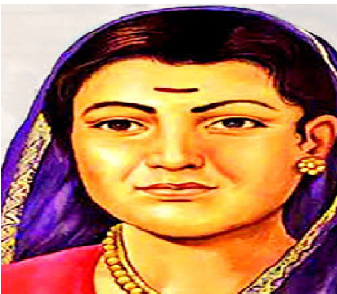

Savitribai Phule
BORN:
3 January 1831
Naigaon, British India (now satara district,Maharashtra)
DIED:
10 March 1897
Pune, Maharashtra
" Knowledge is like fire, which must first be kindled
by some external agent, but will afterward always
propagate itself. "

Biography
Savitribai Phule was a renowned social reformer, poet,
and educationalist from nineteenth-century India. She
is known for her tremendous contributions to women's
education, fighting gender and caste issues, and in
general being a fearless, outspoken woman despite the
constraints women were in, in her time. She's often
regarded as the mother of Indian Feminism. Her contributions
to women's education and liberation are commendable and serve
as an inspiration for young women even today. She is also known
for tackling the evil practice of caste discrimination.
Childhood
- Savitribai Phule was born in the village of Naigon in Maharashtra on 3 January 1831.
- Her parents, Lakshmi and Khandoji Nevase Patil, both belonged to the Mali community.
She was their eldest daughter.
- As it was customary in those times, she was married off at the young age of 9, to
Jyotirao Phule, who was 13 at the time. Both of them belonged to the same community.
- She was always eager to learn to read and study, but it wasn't common for women
to get educated at that time. Jyotirao, her husband, who is also known for being a
social reformer supported her eagerness to study. After their marriage, Savitribai
learned to read with his help.
Education and Works
- After Jyotirao Phule taught Savitribai to read and receive primary education,
she was further educated by his friends Keshav Shivram Bhavalkar and Sakharam
Yeshwant Paranjpe. She was soon inspired to be a teacher.
- She enrolled herself in teacher training programs after her education.
First in an institution in Ahmednagar, run by the American missionary
Cynthia Farrar, and then in “normal school” in Pune. She could likely
have been the first Indian woman to be a teacher and headmistress.
- After being trained as a teacher she started teaching girls in Pune,
along with Jyotirao Phule's mentor, Sagunabai. Sagunabai is often
referred to as a revolutionary feminist and social reformist.
- Not long after that Savitribai, Jyotirao, and Sagunabai started their
first school at Bhide Wada. It was indigenous and for the first time, created for girls.
- After a few more years the Phule couple was running three schools for
girls in Maharashtra. Their curriculum was commendable and advanced. Some
say that the girls enrolled in their schools outnumbered the number of
boys in government schools.
- In 1849, Savitribai opened a school along with Fatima Sheikh, who is said
to be the first Muslim female teacher in India.
- In the 1850s, she established two educational trusts called the “Native
Female School”, in Pune and the Society for Promoting the Education of Mahars,
Mangs, and Etceteras, along with her husband.
- Savitribai Phule and Jyotirao Phule opened a total of 18 schools together
promoting the education of backward castes and women.
- They also opened a care center called “Balhatya Pratibandhak Griha” for
pregnant rape victims and to enable them to raise their children.
- As a forward thinker and philanthropist, Savitribai has also written
a few revolutionary literary works. This includes Kavya Phule (1854),
Bavan Kashi Subodh Ratnakar(1892), and a poem entitled “Go Get Education”.
- She also established the Mahila Seva Mandal to raise awareness about women's issues.
- Both Jyotirao Phule and Savitribai Phule fought against multiple social evils. They condemned the caste system, spoke against sati, encouraged the education of the oppressed, widow remarriage, and so on. They opened several homes and trusts to help out the distressed.
Personal Life, Backlashes & Death
- Savitribai's biography would be incomplete without mentioning the backlashes
Phule's received. It was uncommon for Shudras to get educated at their time.
Despite that, they emerged successful in their work with sheer willpower and hard work.
- It is said that she would carry an extra saree with herself when going to her
schools to teach because upper castes threw pebbles at her.
- In 1849, Savitribai and her husband were kicked out of his father's
house because their work was considered “sinful” in brahmin texts.
- Savitribai never had biological children, instead, she and her husband
adopted Yashwant, who is said to be a brahmin widow's son.
- She died heroically while trying to save a plague-infected child and carrying him to the hospital. She caught the bubonic plague and died with the infection on 10 March 1897.
Legacies & Achievements
- Savitribai lived an inspiring, iconic, full life. Today she is a feminist
and anti-caste icon. Every year on her birthday, 3 January, “Balika Diwas” is
celebrated, honoring the girl child and her right to education.
- She is honored by many government bodies too. Pune City Corporation created
a memorial for her in 1983. On March 10, 1998, India Post issued a stamp to
commemorate her.
- The University of Pune has been renamed Savitribai Phule
Pune University.
- Her inspiring life has often been depicted in many TV dramas, biopics,
and books. She remains one of the most inspiring Indian women one could look
out for.